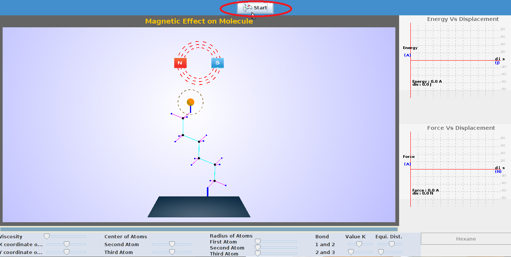
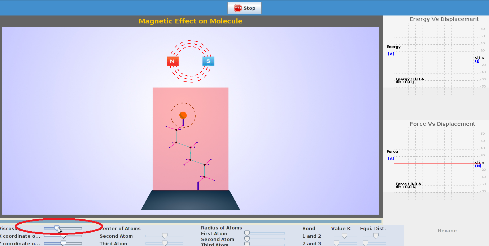

All the forces that can operate at the molecular level with in a single pure substance are discussed in the previous experiments. It is possible to have what we might call hybrid forces that operate when pure substances are mixed to form solutions. When an ionic solid such as sodium chloride dissolves in water, ion-dipole forces are responsible. The maximum magnitude of ion-dipole forces is given by a form of Coulomb's Law that is intermediate between equations
F = q*m/W*r3

Ion-Dipole Forces An ion-dipole force is an attractive force that results from the electrostatic attraction between an ion and a neutral molecule that has a dipole. The induced dipole forces appear from the induction (also known as polarization), which is the attractive interaction between a permanent multipole on one molecule with an induced (by the former di/multi-pole) multipole on another. This interaction is called Debye force after Peter J.W. Debye. The example of an induction-interaction between permanent dipole and induced dipole is HCl and Ar. In this system, Ar experiences a dipole as its electrons are attracted (to H side) or repelled (from Cl side) by HCl. This kind of interaction can be expected between any polar molecule and non-polar/symmetrical molecule. The induction-interaction force is far weaker than dipole-dipole interaction, however stronger than London force.
London Dispersion forces

To determine the Solvent viscous forces on polyatomic molecule.


To perform this experiment there are certain parameters to be initialized and the procedure detailed here can be followed.
| Select the molecule on which Experiment is to be performed. |
 |
| STEP1:Click on the start button ,to start the experiment. |
|  |
| Step2:The viscosity of the medium can be varied with the help of slider as shown in the snapshot. |
|  |
| Step 3: The postion of magnet can be varied by varying the coordinates of magnet provided as sliders.The change in energy by varying magnetic postion is seen. |


- Andrew Leech "Modelling and simulations"
- Linus Pauling "The Nature of Chemical Bond"
- Mark C. Williams Northeastern University.
- Jurij Kotar “Optical Tweezers” ,University of Cambridge, Cavendish Laboratory, Biological and Soft Systems.
- http://www.stanford.edu/group/blocklab/Optical%20Tweezers%20Introduction.htm
- http://www.biop.dk/Research/Main_research_tweezers.htm
- http://www.ncbi.nlm.nih.gov/pmc/articles/PMC1564163/ http://en.wikipedia.org/wiki/Simple_harmonic_motion
- http://http://www.pumma.nl/index.php/Theory/Potentials
- “Dynamics of structures” by Anil K chopra.
- http://surendranath.tripod.com/Applets/Oscillations/SHM/SHMApplet.html